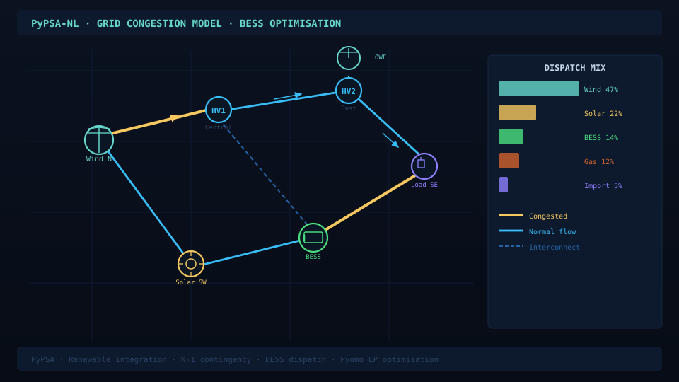
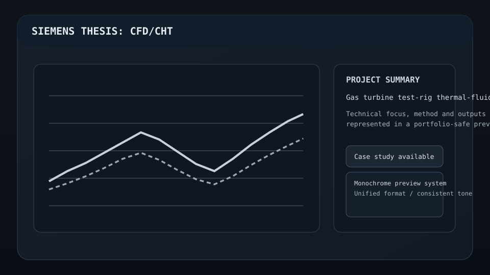
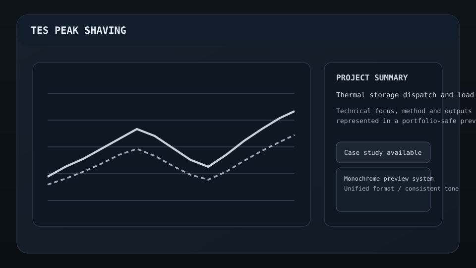
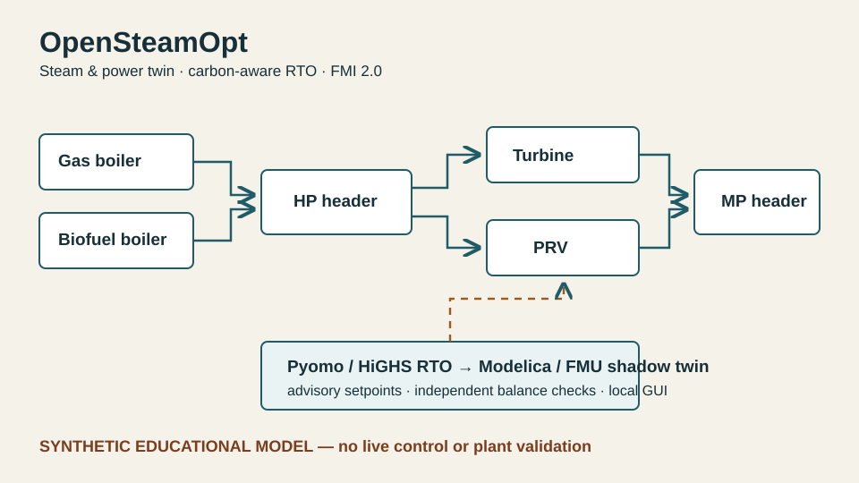

T Thermal & experiments
S Energy systems
N Nuclear
Useful overlap if you work on
High-temperature hardware, thermal-fluid modelling, instrumentation or experiment–model agreement.
Industrial evidence Siemens Energy thesis Methods CFD / CHT · NI-DAQ · LabVIEW Best route Thermal / CFD track
Useful overlap if you work on
Power-system stress, storage, hydro flexibility, transfer constraints, optimisation or open energy data.
Flagship study Kerala2040 Methods PyPSA · OSeMOSYS · ERA5 · GIS Best route Energy systems track
Useful overlap if you work on
Thermal-hydraulics, experimental nuclear systems, cross-disciplinary research or building the nuclear engineering workforce.
Existing base Heat transfer · CFD · experiments Adding now Reactor systems · safety · nuclear context Potential contribution Thermal / modelling / research software
700°C-class
high-temperature calibration-rig work
Siemens thesis →
8,760 h
weather-sensitive power-system chronology
Kerala2040 →
Modelica + FMI
dynamic thermal-storage and steam-system twins
TES work →
PyPSA ↔ OSeMOSYS
cross-framework implementation checks
See methods →
01

Power systems · independent research · 2026
Kerala2040
What actually makes a power system vulnerable: energy, difficult hours, hydro timing, imports or the network?
233 source-backed lines8,760 h chronology2 modelling frameworks
02

Thermal / experimental · KTH × Siemens Energy
High-temperature calibration rig
How do you make a numerical thermal model useful when real hardware refuses to behave ideally?
03

Thermal storage · research software
TES Discharge Screen
When does a battery-like constant-discharge assumption become too simple for high-temperature thermal storage?
04

Industrial energy · open-source demonstrator
OpenSteamOpt
Can optimisation and a dynamic shadow twin live in the same transparent engineering workflow?
Open only the part that is useful to you.